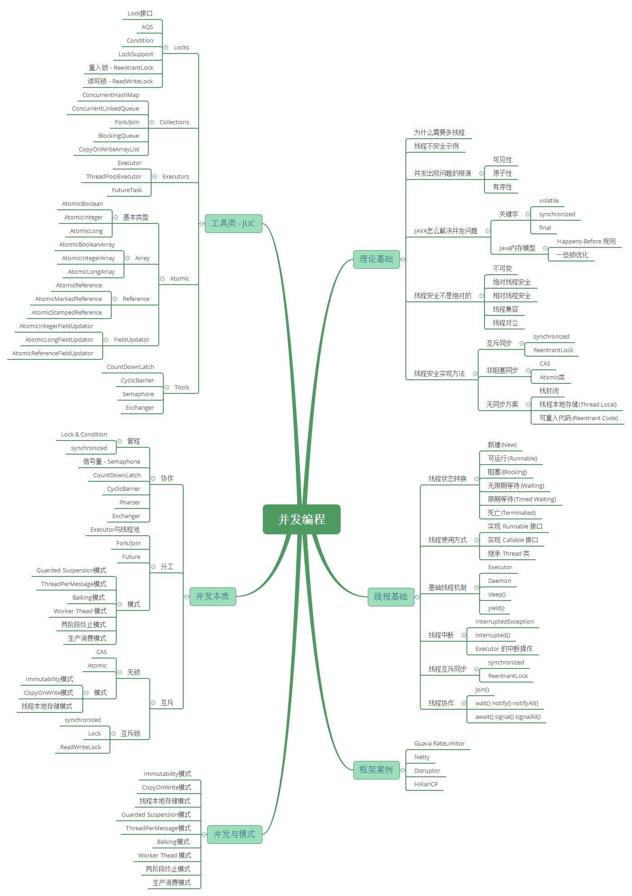

Single Thread Rule 单一线程原则
Monitor Lock Rule 管程锁定规则
Volatile Variable Rule volatile 变量规则
volatile
Thread Start Rule 线程启动规则
Thread Join Rule 线程加入规则
Thread Interruption Rule 线程中断规则
Finalizer Rule 对象终结规则
Transitivity 传递性